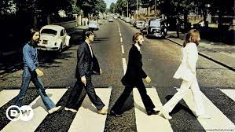

Ana Castela nasceu em Amambai, no Mato Grosso do Sul, e foi criada na cidade vizinha Sete Quedas, na fronteira com o Paraguai. Vivendo em uma fazenda com a família, a cantora aprendeu desde cedo a realizar tarefas do campo, a andar de cavalo e até a pilotar trator.
Musicas:
Nosso Quadro
Boiadera
Não para (feat.Belle Kaffer e DjCharles New)
Dona de mim
Pipoco
Grupos (Grupinhos)

The Beatles foi uma banda de rock, formada na cidade de Liverpool (Inglaterra), em 1956. Faziam parte deste grupo os seguintes músicos: John Lennon (vocalista, guitarrista e compositor), George Harrison (guitarrista e vocalista), Paul Mc Cartney (baixista, compositor e vocal) e Ringo Star (baterista).
Melhores Musicas:
A day in the life
I want to hold your hand
Strawberry fields forever
Yesterday
In my life
Something
Hey Jude
Let it be
Bandas
O nome do grupo: The Rolling Stones. A formação nasceu do encontro entre Keith Richard e Michael Jagger na primavera de 1960 em Richmond. Em 1961, juntam-se à banda Richard Taylor e Brian Jones. A história apaixonante e o estilo avassalador dos Rolling Stones fizeram deles uma das lendas da música pop.
Melhores Musicas:
Sympathy For The Devil
Paint It Black
(I Can’t Get No) Satisfaction
Angie
Wild Horses
Miss You
Aplicativos